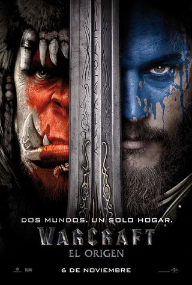

Mejores peliculas basadas en videojuegos famosos!!!
IR ABAJO#1 Uncharted
Naughty Dog es ese maravilloso estudio exclusivo de PlayStation al que algunos gamers acusan de hacer "pelijuegos". Todos a los que nos encantan esas propuestas jugables tan cinematográficas llevábamos tiempo esperando su salto a la pantalla. The Last of Us debe ser mejor, por intensa y dramática, pero esta Uncharted ha superado la prueba. Como película de orígenes nos quedamos con más ganas de ver a los personajes del videojuego con su plena identidad pero sigue siendo una cinta llena de aventuras, viajes, piruetas asombrosas, engaños y mil chistecitos marca de la casa entre Nate y Sully al borde de la muerte.
Seguidamente te mostraremos el trailer de la pelicula:
#2 Resident Evil

Se puede decir lo que sea de Paul W.S. Anderson, pero creó un mundo propio en la serie de películas de Resident Evil. Las películas, frustrantemente, se alejan mucho de la narrativa de los juegos, pero Milla Jovovich se ha convertido en una especie de icono del cine gracias a su duradero papel protagonista en ellas. Aunque se toman muchas libertades con respecto a la franquicia de Resident Evil, la construcción del mundo en las películas es lo suficientemente cautivadora como para que éstas destaquen en el género.
Seguidamente te mostraremos el trailer de la pelicula:
#3 Assassin's Creed

El equipo creativo detrás de la película de Assassin's Creed adoptó el enfoque correcto. Ubisoft, el estudio de videojuegos, decidió tomar las riendas creativas del proyecto y contratar a un talento de confianza que creyera en el potencial de la franquicia. Este talento, por supuesto, era el incipiente protagonista de Hollywood Michael Fassbender. Puede que lo que hizo con la película no fuera precisamente un éxito de taquilla, pero fue un ejemplo de película de videojuegos hecha con arte y con un conocimiento profundo y meticuloso de la historia de la saga
Seguidamente te mostraremos el trailer de la pelicula:
#4 Warcraft-El-Origen 
World of Warcraft es una de las series de videojuegos más queridas de todos los tiempos. Su base de fans es muy amplia y abarca generaciones de niños que, en algunos casos, llevan décadas jugando. La versión de Duncan Jones de la serie ha demostrado, quizás por primera vez, lo que ocurre cuando un gran fan de un videojuego recibe las llaves de una franquicia cinematográfica. Jones es un fanático declarado de WoW, y su conocimiento de la serie quedó patente en esta película.
Seguidamente te mostraremos el trailer de la pelicula:
#5 Tom Raider

Después de la decepcionante interpretación de Angelina Jolie de la franquicia a principios de la década de 2000, parecía que Tomb Raider nunca alcanzaría todo su potencial en la pantalla. La serie en sí es extremadamente cinematográfica y, al margen de la agobiante explotación y el sexismo de los juegos, ofrece lo que podría ser una serie de películas del tipo Indiana Jones con mucha fuerza dirigida por mujeres. En 2018, Alicia Vikander protagonizó esta versión mucho más oscura -y mucho más realista- de Tomb Raider, y realmente lo clavó.
Seguidamente te mostraremos el trailer de la pelicula:
#6 Final Fantasy VII: Advent Children

Final Fantasy es otra de las grandes franquicias de videojuegos que cuenta con una subcultura propia. Durante décadas, los fans se han preguntado cómo sería ver su amado juego de rol en la pantalla. Advent Children, la única película de esta lista que no es de acción real, respondió a esa petición en 2005. La imaginativa y a veces disparatada versión de la querida saga de Square Enix utilizaba gráficos 3D generados por ordenador en lugar de actores reales, y realmente difuminaba la línea entre el cine y el juego.
Seguidamente te mostraremos el trailer de la pelicula:
#7 Sonic
Escucha, si pudiera dar el primer puesto a "Speed Me Up" -la canción del verano pasado, de este verano, del próximo y del siguiente- lo haría. Pero mi editor no me lo permite. En su lugar, los apoyos van a la propia película, que resultó ser una salida sorprendentemente divertida para el chico azul, a pesar de los meses de problemas de producción. Para bien o para mal, probablemente siempre recordaremos a Sonic, la película como la última película que vimos en los cines antes de la pandemia.
Seguidamente te mostraremos el trailer de la pelicula:
#8 Ralph
De acuerdo. ¡Rompe Ralph! no es técnicamente una película de videojuegos, ya que no existe como juego en la vida real. Pero la película imagina un mundo en el que los personajes de los juegos de arcade se reúnen en un salón de juegos digital, lo que lleva a la celebración de una película sobre videojuegos y los malos que los habitan. Es extraña. Es salvaje. Tiene corazón. Y un cameo de Bowser. ¿Qué más necesitas?
Seguidamente te mostraremos el trailer de la pelicula:
#9 Pokémon: Detective Pikachu

La franquicia Pokémon siempre ha sido incondicional: están las cartas, la serie de televisión y las películas de animación. Ah, y luego está el propio juego, que ha definido toda una generación. Incluso con todo eso, cuando se anunció el lanzamiento de Detective Pikachu, hubo cierto escepticismo (legítimo) sobre cómo sería una película de acción real protagonizada por las queridas criaturas. Pero no sólo los efectos visuales son buenos, sino que Ryan Reynolds y Justice Smith hacen que la película sea una maravilla. Estamos pidiendo a gritos un Pokémon Go en streaming.
Seguidamente te mostraremos el trailer de la pelicula:
#10 Mortal Kombat

¿Qué se puede decir de la película de Mortal Kombat que no se haya dicho ya? Es exagerada. Es emocionante. Es tonta. Es brillante. El espíritu de los 90 está vivo en esta película, y a día de hoy, el título tecno-futurista de lucha sigue siendo la película de videojuegos más satisfactoria hasta la fecha. Puede que no sea el ejemplo más "artístico" de esta lista. Pero Mortal Kombat captó perfectamente la esencia de una franquicia de juegos, y no puede ser superada.
Seguidamente te mostraremos el trailer de la pelicula:
PD:Información de lo 10 videojuegos sacada de la siguente pagina web: Esquire
IR ARRIBA